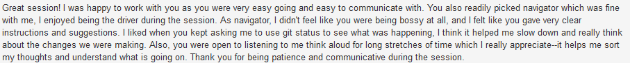
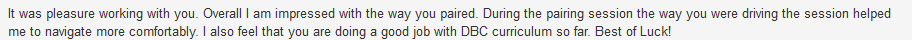
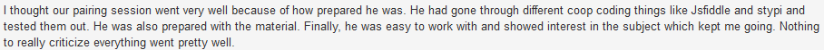
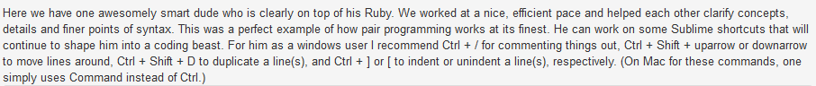

Cultural Blog 5
Pairing and Giving Feedback
May 31st, 2015
Ever since the start of DBC, we have been pairing at least 3 times a week (2 normal pair and 1 guided pair). This is the minimum requirement. Some pair more than others. I did not do more than 3 times a week since I did not have enough time in the first 4 weeks. I was still working so it was hard to find a schedule to fit in with others.
In addition to pairing, we are also required to give feedback to help a classmate to improve himself or herself. This does not take as much time as the pairing itself but it still requires you to be "kind, actionable, and specific", which is not always easy to put into words.
Let's Talk About Pairing
I am particularly 70% in favor of pairing while the other 30% is unfavorable. I learned a lot through pairing with other classmates to solve a challenge. Furthermore, I learned to communicate better -- I cannot downplay this skill here. As an engineer, it is very important to be able to effectively communicate your ideas to your teammates.
What I enjoyed most about pairing so far is when we were able to communicate effectively and got through the code challenge faster than the average time it takes to finish the challenge. Furthermore, it is always great when my pair was willing to try and test out new things to see if things would work or not.
The difficult part of pairing is not being able to communicate my ideas fluently to the other person or not understanding what my pair is saying. This happened one time when we first started with Ruby and the code challenge was different from all the previous challenges. My pair and I had trouble communicating. After the session, I did not feel good about myself at all. I felt I needed to improve my communication.
My communication has gotten a lot better since then and I think the challenges are easier to solve when I am able to communicate better.
Let's Talk About Giving and Receiving Feedback
As part of the requirement, everyone in DBC has to give feedback after the pair session. This is meant to help each other improve his or her skills such as communication. The feedback has to be "kind, actionable, and specific".
I normally provided feedback after my pair session, so I would not forget (I think almost everyone in DBC did this as well). Initially, providing feedback was a bit difficult as I needed to think of a good quality that my pair had and then a quality that he or she needed to improve. It was difficult to put my feedback into a kind, actionable, and specific. However, over several pairing sessions, my skill in giving feedback and writing improved.
All of the feedback in DBC are rated by students, so giving a feedback that is not kind, actionable, and specific will receive a poor score.
Giving feedback is hard sometimes but receiving a positive feels nice. The positive feedback indicates that I did a good job in the session and my pair was comfortable communicating and working with me. Here are several of the positive feedback that I received:




Thanks for reading!